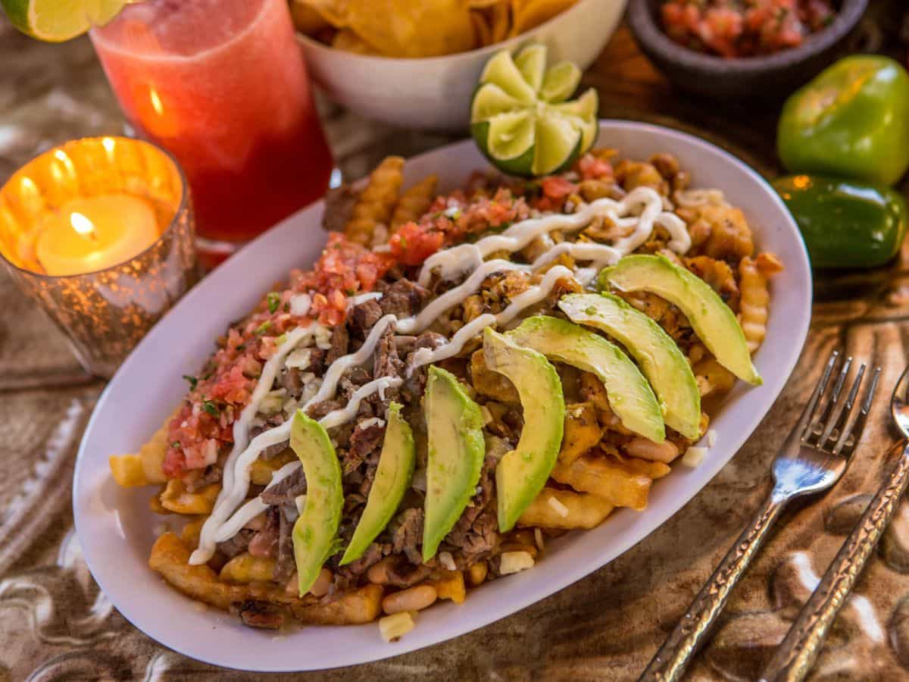
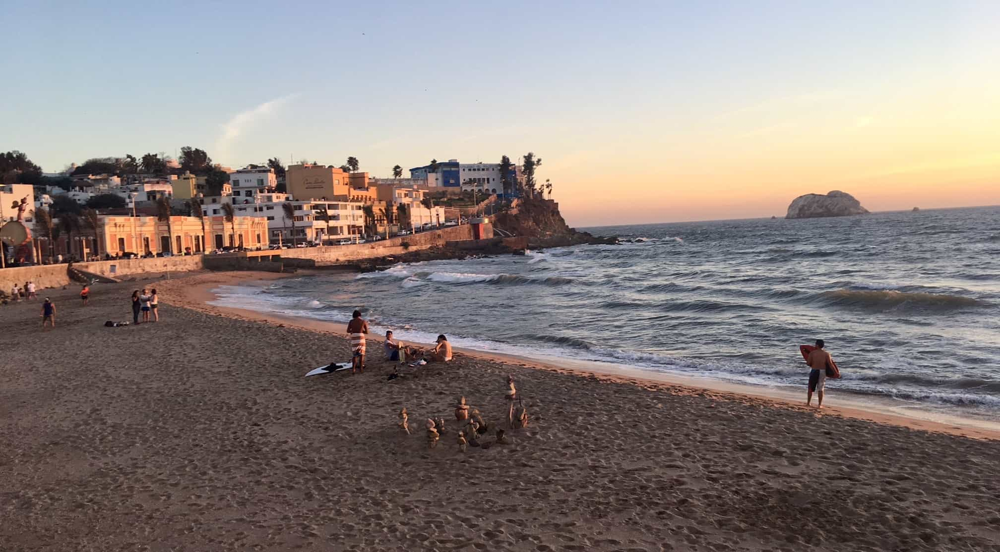
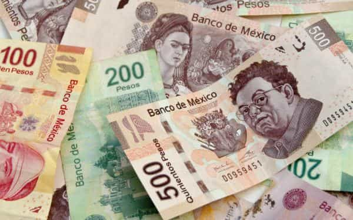
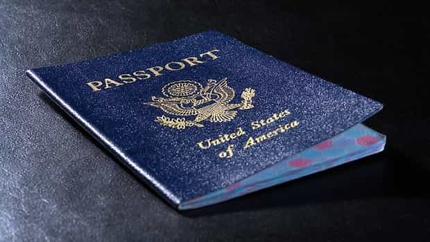

Mexico doesn’t get much love from many a male digital nomad and perpetual traveler. It’s just not a sexy spot. Too close to the US, violent, greener pastures, and all that good stuff. For guys going to Latin America, Colombia reigns supreme. Brazil still has the sex appeal. Hell, even Peru has gained some steam as of late.
But, Mexico? Building a wall comes to mind when the country rolls off the tongue. And let’s not forget about the cartel violence. Many a gringo laments why on earth someone would head south of the border when talking about travel.

Mexico is a highly underrated Latin American country. While there’s a reason or three to avoid Mexico, many a traveler will find the country to be damn near paradise under closer inspection. Here’s why:
1. Best Food In Latin America

I love the Dominican Republic. Colombia is one hell of a good time. But let’s not beat around the bush here, the cuisine in those countries sucks arse. Bandeja Paisa is decent, but that’s about it. And while Peruvian food is good, Mexican food is excellent.
I’m not just talking about the carb-loaded stuff that sticks to the side of the ribs and adds extra weight. That stuff is good. Don’t get me wrong. I’m certainly a fan of tacos, enchiladas, and their ilk. But what I’ve been impressed with is the seafood.
In my beachside village by the sea, I eat plump shrimps, tuna steaks, and red snapper by the daily. It’s fresh from the Pacific Ocean and costs pennies on the dollar.
2. First-World Amenities
Maybe not first-world. But you’ll find more amenities that mimic the States here than you will in other Latin American countries. It’s easier to buy things like Greek yogurt or a juicer that won’t break down in three days while living in Mexico. There’s Walmart. There’s Sam’s Club.
Sure, their stores are extra American, but it makes moving to a new country and grocery shopping a lot easier. And there’s more than just Walmart.
Coworking spaces are all over Mexico. Hell, the WeWork on the outskirts of Roma Norte is undoubtedly scenic with that view of the Angel de la Independencia. Even the coworking space in my village by the sea features 50 Mbps of Internet. Same goes for my apartment – 50 Mbps Internet with an ocean view. Try finding that on the Caribbean coast of Colombia.
Yoga studios, CrossFit gyms, and pilates can be found in most Mexican cities. And stuff just works in Mexico, which isn’t a guarantee in many a Latin American country.
3. Better Beach Towns

I’ve been unimpressed with beach towns throughout Latin America. Haven’t found one I’d consider livable after nearly four years of traveling throughout the region. Punta Cana? Hell no. Cabarete? Nah. Las Terrenas? No way. Boca Chica? Lol. Cartagena? GTFO. Santa Marta? Nope. Mancora? No, sir. Montanita? Never. San Juan del Sur? Not possible. Bocas del Toro? Not happening.
There’s not a single beach city in Central America, Colombia, Peru, or the Dominican Republic that I’d consider livable. Ecuador may have a few, but I haven’t explored the country enough. Brazil probably has a handful, but I’m learning Spanish – Portuguese isn’t on my radar.
That leaves us with Mexico. And luckily for beach lovers, it seems Mexico has some great, livable beach towns. Mexican beach towns offer more amenities, better nightlife, and more. I’ve checked out Mazatlan, Playa del Carmen, Cozumel, and Cancun. The first two are highly livable.
You also have spots like Puerto Vallarta, Veracruz, Ensenada, and Acapulco – which are all on my radar.
4. Low Cost Of Living

Mexico is pretty cheap these days. The exchange rate is favorable, and your money goes far here. For $1,500-2,500 USD a month, you can live a high quality of life in nearly every city throughout Mexico.
For example:
- My beachfront condo with good Internet and ocean views costs me less than $30/night.
- Uber rides start at $1 USD and generally always cost less than $5 USD.
- Monthly membership at my yoga studio starts at $25 USD.
- Beers at local bars tend to cost $0.80-2.00 USD in my village by the sea.
- A kilo of tuna steaks runs me $7 USD at the local market.
Sure, certain things are just as expensive as the States. Coworking spaces are always $100+ here. Gyms tend to cost $30-50 USD a month. But overall, there’s good value.
5. The Girls
Mexican girls don’t get a lot of love from many a male traveler. Well, in comparison to other Latinas. Often, that’s due to the square-shaped bodies many perceive they have from too many tacos and enchiladas.
I won’t lie to you, they’re not as attractive as the women in Colombia. Nor are they as interested or friendly as the Peruanas. Plus, online dating isn’t as popular in Mexico as it is in other Latin American countries.
Guys can go to South America and schedule dozens of dates online without much effort. Dating in Mexico seems to take a little more than a few swipes and a couple of copy and paste messages in Spanish – once you get outside Mexico City. But don’t get it twisted. There are enough good looking girls in Mexico to feed the needy. And it’s not that difficult to meet them.
Being a foreigner, especially if you’re from somewhere that’s not the States, still has value here. Aka if you’re from Europe, you’ll get a little extra love in Mexico compared to the gringos.
Here are a few other things I’ve noticed…
Mexico City might be the most liberal big city I’ve visited in Latin America
There’s 23+ million people, complete anonymity, and the culture isn’t that far off from the States. There’s an endless supply of women on Tinder in CDMX and nightlife bumps every day of the week. The average looking girl here isn’t too cute, but the population numbers work in your favor. You’ll definitely find some stunners. There’s a reason many dudes make Mexico City home for months on end. Hell, I met a few dudes that loved CDMX (Mexico City) so much that they lived there for years.
If you speak a little Spanish, you’ll be more than happy with your options here
While it’s not the greenest pasture in Latin America, there’s nothing to complain about when dating in Mexico if you can have a conversation in Spanish. That being said, you’ll get hurt more here than in South America for not speaking Spanish. Most Mexican girls have met gringos before. So, speaking Spanish is an easy way to stand out.
Mexican culture is more conservative than other places in Latin America
You see families on the beach, there’s not that many girls on Tinder and sex tourism isn’t rampant like it is in other countries. If you want a girlfriend, many a smaller city in Mexico will offer solid options for foreigners. For living a savage life, I can’t say you’ll enjoy things as much here like you would in the Caribbean or in Colombia. Well, outside of Mexico City.
Mexico is a country of 120+ million people, so it’s a little harder to put a finger on the looks of girls here
There’s a lot of variance depending on where you are in the country. For ass men, this isn’t like Colombia. I’d surmise it’s nowhere near Brazil. The faces can be stunning here, though. Overall, there’s quality to be found. But I haven’t been here long enough and explored enough cities to give a full on judgment on that side of things.
6. Ideal Visa Situation

I got 180 days on a tourist visa upon arriving in Mexico. While I’m relatively new here, I believe one leaves the country for 24 hours and then can return to get another 180 days on their visa.
Some claim Mexico makes it pretty easy to stay year around on a tourist visa to ensure old gringos living in Mexico can stay as long as they please without issue. For digital expats looking to base up and live in a city long term, this is a significant benefit.
Don’t Discount Mexico
Sure, it’s violent – although that’s a little overblown. Knock on wood. And it’s close to the States, so some appeal isn’t there. But Mexico has a lot to offer digital expats. It’s not Colombia, but there’s no denying the quality of life in Mexico is high when compared to other Latin American locales.
Read More: What To Say If You’ve Been To Her Country